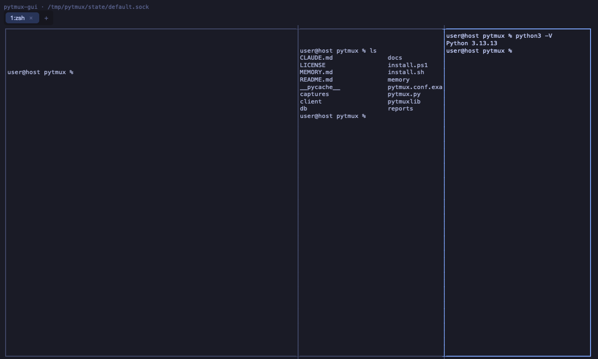
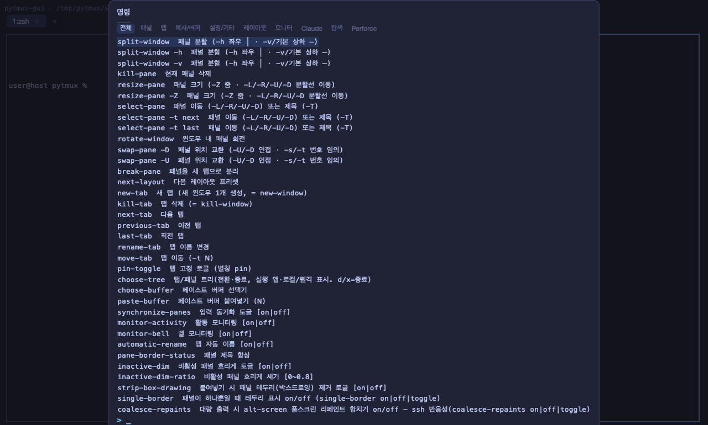
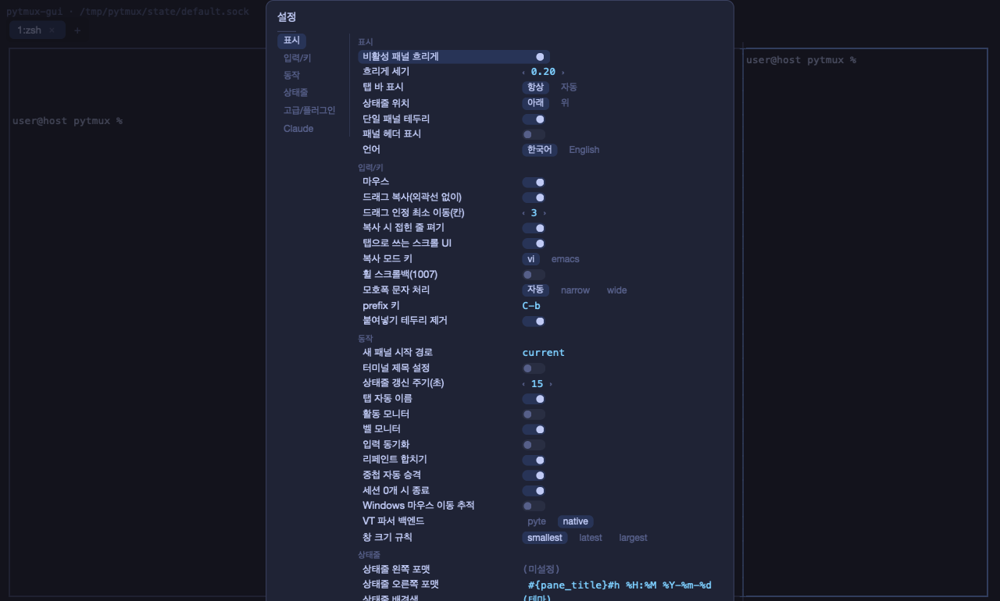
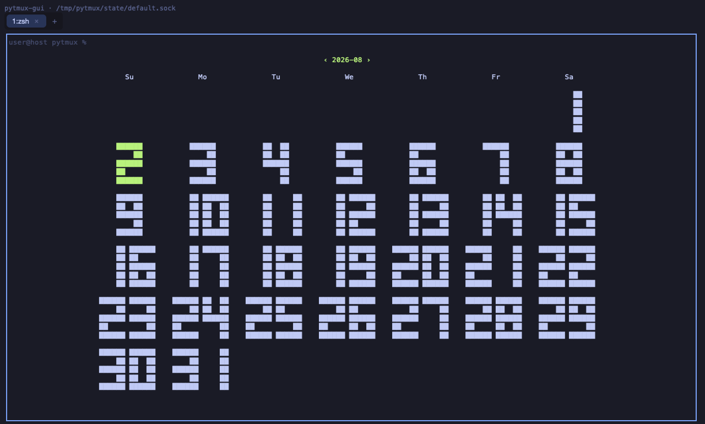

GUI 클라이언트 (개발 중)
pytmux 는 하나의 서버에 여러 클라이언트가 붙는 구조입니다. 지금 클라이언트는 두 벌이고, 둘은 같은 서버에 동시에 붙을 수 있습니다 — 터미널 안에서 도는 파이썬 TUI(정본), 그리고 창으로 뜨는 Rust GUI(pytmux-gui)입니다. 이 페이지는 그중 아직 만들고 있는 GUI 쪽 이야기입니다.
왜 두 번째 클라이언트인가
지금의 파이썬 클라이언트는 Textual 로 만든 터미널 앱입니다. 덕분에 어느 터미널에서나 돌고 ssh 너머에서도 그대로 쓰이지만, 그 대가로 탭·스크롤·글자 선택·폰트가 숙주 터미널의 제약을 그대로 받습니다 — pytmux 가 그리고 싶은 그림이 있어도 결국 글자 격자 한 장 안에서 표현해야 합니다.
GUI 는 그 천장을 걷어내려는 시도입니다. 다만 서버는 손대지 않습니다. 세션 유지·PTY·원격 페더레이션·토큰 회계처럼 실제로 검증된 자산은 전부 파이썬 서버에 그대로 두고, GUI 는 같은 소켓 프로토콜로 붙는 또 하나의 클라이언트일 뿐입니다. 그래서 GUI 를 쓰다가 TUI 로 돌아와도 같은 세션이 그 자리에 있습니다.
개발 목표
세 가지를 겨냥하고 있습니다. 아래로 갈수록 멀리 있는 목표입니다.
- 네이티브 탭 — 로컬 탭과 페더레이션된 원격 탭을 터미널이 그린 글자 탭바가 아니라 창 자신의 탭 UI로. 드래그해서 순서를 바꾸고, 닫기 버튼을 누르고, 커서 모양이 바뀌는 그런 조작들입니다.
- 블록 단위 표현 — 명령 한 번 = 블록 하나(입력·출력·종료코드·작업 디렉토리·소요시간). 스크롤·선택·복사·접기가 블록 경계를 아는 화면입니다. 지금 서버는 30Hz 로 이미 그려진 셀 격자만 밀어 줄 뿐이라 명령이 어디서 시작하고 끝났는지를 모릅니다 — 그래서 이 목표는 서버가 블록을 만들어 줘야 닿습니다. GUI 작업 중 유일하게 서버를 건드리는 부분이고, 실제 작업량의 중심이기도 합니다.
- Claude Code 화면의 블록화 — 권한 프롬프트·플랜·파일 편집 diff·툴 호출을 화면에서 긁어낸 텍스트가 아니라 구조화된 블록으로 보여 주는 것. 지금 pytmux 가 Claude 화면을 읽어내는 방식은 결국 글자를 눈으로 읽는 것과 같은 일을 하고 있습니다.
어디까지 왔나
래칫이 재는 표면은 2026-08-02 기준 189개 중 189개를 덮었습니다 — 명령 87 · prefix 키 32 · Esc 동선 키 17 · 설정 36 · 화면 17.
그런데 이 숫자는 "다 됐다"는 뜻이 아닙니다. 래칫은 미리 적어 둔 표면 목록을 재는 자이지 실제로 쓸 때 만나는 모든 것을 재지 않습니다. 특히 GUI 쪽에는 아직 화면을 띄우지 않고 재는 시험 장치가 부족해서, 배선이 통째로 빠진 것은 실제로 띄워 찍은 그림이라야 잡힙니다. 위의 알파는 그 뜻입니다 — 표는 채웠지만 손에 익을 만큼 다듬지는 못했습니다.
지금 화면
아래는 2026-08-02 소스로 이 자리에서 직접 띄워 찍은 그림입니다(macOS). 연출한 합성 화면이 아니라 실제로 서버에 붙어 돌던 창입니다.




무엇 위에 서 있나 — warp 의 MIT 부분
창·GPU 렌더러·폰트·입력처럼 GUI 앱의 바닥은 직접 쓰지 않고 warp 터미널의 오픈소스 코드에서 가져왔습니다. 다만 그대로 포크한 것이 아닙니다 — 라이선스 경계가 이 작업의 절반이었습니다.
- warp 저장소는 대부분 AGPL v3 이고 pytmux 는 MIT 입니다. 그래서 MIT 로 배포되는 두 크레이트만 가져왔습니다 — warpui · warpui_core(합 12만여 줄, 저작권 표시 보존). 기준 스냅샷은 2026-07-25 시점입니다.
- 그 두 크레이트가 의존하던 AGPL 크레이트 6개는 전부 자체 구현으로 갈아끼웠습니다. 실제로 호출되는 API 가 몇 개뿐이라, 15,577줄이 1,719줄로 줄었습니다. AGPL 코드는 산출물에 한 줄도 없습니다.
- 이 경계는 말이 아니라 기계가 지킵니다 — 의존 그래프에 허용 목록 밖의 코드가 끼면 게이트가 막고, 무엇을 어디서 가져왔고 무엇을 왜 고쳤는지는 저장소의 client/PROVENANCE.md 에 줄 단위로 적어 두었습니다. 함께 가져온 Roboto 글꼴은 OFL 1.1 입니다.
가져온 코드에도 손을 댔습니다. 터미널 클라이언트는 모든 키를 자식 프로그램에 넘겨야 하고, 붙여넣기는 키가 아니라 덩어리 하나이며, 한글 같은 조합 문자는 자판 한 번이 글자 하나가 아닙니다 — 상류에는 그 이벤트를 받을 창구가 없어 하나씩 열었습니다. 그런 수정도 전부 위 문서에 이유와 함께 남아 있습니다.
띄워 보려면
Rust 를 깔지 않아도 됩니다 — 저장소의 client/build/ 에 미리 빌드한 실행 파일 3종(macOS·리눅스·윈도우)이 들어 있습니다. 이 파일들은 개인 컴퓨터가 아니라 깨끗한 러너에서 굽습니다(빌드한 사람의 소스 경로가 실행 파일에 박히지 않도록).
직접 빌드하시려면: